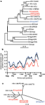
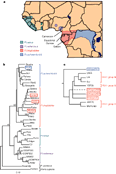
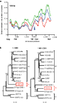

Abstract
The human AIDS viruses human immunodeficiency virus type 1 (HIV-1) and type 2 (HIV-2) represent cross-species (zoonotic) infections1, 2, 3, 4. Although the primate reservoir of HIV-2 has been clearly identified as the sooty mangabey (Cercocebus atys)2,4, 5, 6, 7, the origin of HIV-1 remains uncertain. Viruses related to HIV-1 have been isolated from the common chimpanzee (Pan troglodytes)8, 9, but only three such SIVcpz infections have been documented1,10,11, one of which involved a virus so divergent11 that it might represent a different primate lentiviral lineage. In a search for the HIV-1 reservoir, we have now sequenced the genome of a new SIVcpz strain (SIVcpzUS) and have determined, by mitochondrial DNA analysis, the subspecies identity of all known SIVcpz-infected chimpanzees. We find that two chimpanzee subspecies in Africa, the central P. t. troglodytes and the eastern P. t. schweinfurthii, harbour SIVcpz and that their respective viruses form two highly divergent (but subspecies-specific) phylogenetic lineages. All HIV-1 strains known to infect man, including HIV-1 groups M, N and O, are closely related to just one of these SIVcpz lineages, that found in P. t. troglodytes. Moreover, we find that HIV-1 group N is a mosaic of SIVcpzUS- and HIV-1-related sequences, indicating an ancestral recombination event in a chimpanzee host. These results, together with the observation that the natural range of P. t. troglodytes coincides uniquely with areas of HIV-1 group M, N and O endemicity, indicate that P. t. troglodytes is the primary reservoir for HIV-1 and has been the source of at least three independent introductions of SIVcpz into the human population.
Five lines of evidence have been used to substantiate zoonotic transmission of primate lentiviruses3: first, similarities in viral genome organization; second, phylogenetic relatedness; third, prevalence in the natural host; fourth, geographic coincidence; and fifth, plausible routes of transmission. For HIV-2, a virus (SIVsm) that is genomically indistinguishable and closely related phylogenetically was found in substantial numbers of wild-living sooty mangabeys whose natural habitat coincides with the epicentre of the HIV-2 epidemic2,4, 5, 6, 7. Close contact between sooty mangabeys and humans is common because these monkeys are hunted for food and kept as pets6, 7. No fewer than six independent transmissions of SIVsm to humans have been proposed4,6,7. In contrast, the origin of HIV-1 is much less certain3. HIV-1 is most similar in sequence and genomic organization to viruses found in chimpanzees (SIVcpz)1,10, 11, but a wide spectrum of diversity between HIV-1 and SIVcpz11, an apparent low prevalence of SIVcpz infection in wild-living animals8,9,12, and the presence of chimpanzees in geographic regions of Africa13 where AIDS was not initially recognized have cast doubt on chimpanzees as a natural host and reservoir for HIV-1. Rather, it has been suggested that another, as yet unidentified, primate species could be the natural host for SIVcpz and HIV-1 (refs 1, 11).
We recently identified a fourth chimpanzee with natural SIVcpz infection. This animal (Marilyn) was wild-caught in Africa (country of origin unknown), exported to the United States as an infant, and used as a breeding female in a primate facility until her death at age 26 years12. During a serosurvey in 1985, Marilyn was the only chimpanzee of 98 tested who had antibodies strongly reactive with HIV-1 by enzyme-linked immunosorbent assay (ELISA) and western immunoblot12. She had never been used in AIDS research and had not received human blood products after 1969. She died in 1985 after giving birth to still-born twins. An autopsy revealed endometritis, retained placental elements and sepsis as the final cause of death. Depletion of lymphoid tissues was not noted. Here we used the polymerase chain reaction (PCR) to amplify HIV- or SIV-related DNA sequences directly from uncultured (frozen) spleen and lymph-node tissue obtained at autopsy in order to characterize the infection responsible for Marilyn's HIV-1 seropositivity. Amplification and sequence analysis of subgenomic gag (508 base pairs (bp)) and pol (766 bp) fragments revealed the presence of a virus related to, but distinct from, known SIVcpz and HIV-1 strains. Because virus isolation from the autopsy tissues was unsuccessful, we used PCR to amplify and sequence four overlapping subgenomic fragments that together comprised a complete proviral genome, which we termed SIVcpzUS. Analysis of potential coding regions revealed the presence of a vpu gene (found only in HIV-1 and SIVcpz viruses)1,11,14 in addition to structural and regulatory genes common to all primate lentiviruses. None of the genes in SIVcpzUS contained deletions, insertions or rearrangements, and all reading frames were open except for gag (p24) and rev (second exon), which contained single in-frame stop codons. Promoter and enhancer elements of the SIVcpzUS long terminal repeat (LTR) were indistinguishable from those of other members of the HIV-1/SIVcpz group.
Only three other SIVcpz strains have been reported, two from animals wild-caught in Gabon (SIVcpzGAB1 and SIVcpzGAB2)8 and one from a chimpanzee exported to Belgium from Zaire (SIVcpzANT)9. SIVcpzGAB1 and SIVcpzANT have been sequenced completely1,11, but only 280 bp of pol sequence are available for SIVcpzGAB2 (ref. 10). To determine the evolutionary relationships of SIVcpzUS to these and other HIV and SIV sequences, we performed distance plot and phylogenetic tree analyses using sequences from the HIV sequence database (ref. 14 and http://hiv-web.lanl.gov/HTML/compendium.html ). These analyses identified SIVcpzUS unambiguously as a new member of the HIV-1/SIVcpz group of viruses. A phylogenetic tree of full-length Pol sequences showed that SIVcpzUS clustered well within this group but was not particularly closely related to any one human or chimpanzee virus (Fig. 1a). Trees based on other coding regions yielded virtually identical topologies (not shown). Comparison of the phylogenetic position of SIVcpzUS with those of the other SIVcpz strains (Fig.1a ) showed that SIVcpzUS was considerably more closely related to SIVcpzGAB1 than to SIVcpzANT. Diversity plots of full-length (concatenated) protein sequences showed that SIVcpzUS was nearly twice as different from SIVcpzANT as from SIVcpzGAB1 (Fig. 1b). When partial Pol sequences of SIVcpzGAB2 were included in phylogenetic analyses (Fig. 1c ), SIVcpzANT remained the outlier, differing from the other SIVcpz strains by 23–24%, as compared with only 9–13% divergence among SIVcpzUS, SIVcpzGAB1 and SIVcpzGAB2. These findings indicate that naturally occurring SIVcpz strains fall into two related yet highly divergent phylogenetic lineages.
Figure 1: Phylogenetic analysis of SIVcpzUS.
a, Phylogenetic relationship of SIVcpzUS to other primate lentiviruses. The tree was derived by neighbour-joining analysis27 of full-length Pol sequences (trees derived by maximum-likelihood methods28 yielded very similar topologies). Horizontal branch lengths are drawn to scale with the bar indicating 0.1 amino-acid replacements per site. Numbers at each node indicate the percentage of bootstrap samples (out of 1,000) in which the cluster to the right is supported (only values >80% are shown). Other SIVcpz strains closely or more distantly related to SIVcpzUS are shown in red and blue, respectively. b, Diversity plots of concatenated SIVcpz protein sequences depicting the proportion of amino-acid sequence differences between SIVcpzUS and SIVcpzGAB1 (red), SIVcpzUS and SIVcpzANT (blue), and SIVcpzGAB1 and SIVcpzANT (black), calculated for a window of 200 amino acids moved in steps of 10 amino acids along the alignment (available as Supplementary Information). The x-axis shows the amino-acid positions along the alignment. The positions of Gag, Pol, Vif, Env and Nef regions are shown. The y-axis denotes the distance between the viral proteins compared (0.1 = 10% difference). c, Unrooted neighbour-joining tree of partial Pol protein sequences (distances are drawn to scale).
High resolution image and legend (46K)Divergent lineages of SIV have also been found in African green monkeys15, 16, 17. These primates have a broad distribution throughout sub-Saharan Africa and have been classified based on phenotypic differences into four major species, generally known as vervet (Chlorocebus pygerythrus), grivet (C. aethiops), sabaeus (C. sabaeus) and tantalus ( C. tantalus) monkeys (note that the genus designation of the African green monkey as Cercopithecus has recently been changed to Chlorocebus 18). The many SIVagm strains infecting these animals cluster in four distinct phylogenetic lineages according to their species of origin, indicating ancient infection followed by co-evolution of virus and host3,15, 16, 17.
To explore whether a similar host-dependent evolution of SIVcpz could account for the extraordinary diversity between SIVcpzANT and the other three SIVcpz strains, we determined the subspecies identity of the animals from which these viruses were derived. Four chimpanzee subspecies with non-overlapping geographic ranges have been proposed on the basis of genetic differences in mitochondrial (mt) DNA sequences19, 20. These are the western P. t. verus , the Nigerian P. t. vellerosus, the central P. t. troglodytes , and the eastern P. t. schweinfurthii (Fig. 2a ). We amplified and sequenced a 498-bp fragment of mitochondrial control region (D-loop) sequences from peripheral-blood mononuclear cell (PBMC) or spleen DNA of the four SIVcpz-infected chimpanzees. Comparison of these newly derived mtDNA sequences to representative sequences from the four chimpanzee subspecies revealed that the three chimpanzees infected with the more closely related SIVcpzGAB1 (GAB1), SIVcpzGAB2 (GAB2), and SIVcpzUS (Marilyn) strains all belonged to the P. t. troglodytes subspecies (Fig. 2b). In contrast, the animal infected with the highly divergent SIVcpzANT strain (Noah) was identified as a member of the P. t. schweinfurthii subspecies. Classification of the SIVcpz-infected chimpanzees was unambiguous as their mtDNA sequences fell within well-defined subspecies clusters19 and was further corroborated by the known geographic origins of three of the animals (GAB1, GAB2 and Noah)8, 9. We conclude from these results that, as for SIVagm, there has been host-dependent evolution of SIVcpz in chimpanzees.
Figure 2: Origin of HIV-1 in Pan troglodytes troglodytes.a, Geographic ranges of the four subspecies of the common chimpanzee (Pan troglodytes) defined by mtDNA analysis (adapted from refs 19, 20 with permission).
b, Phylogenetic tree of mtDNA sequences. Positions of sequences from the SIVcpz-infected chimpanzees Marilyn (SIVcpzUS), GAB1 (SIVcpzGAB1), GAB2 (SIVcpzGAB2) and Noah (SIVcpzANT) are boxed. The phylogeny was derived by the neighbour-joining method27 applied to pairwise sequence distances calculated using the Kimura two-parameter method (transition/transversion ratio set to 10). Horizontal branch lengths are drawn to scale with the bar indicating 0.1 nucleotide replacements per site. Numbers at each node indicate the percentage of bootstrap samples (out of 1,000) in which the cluster to the right is supported (only values >80% are shown). Brackets on the right indicate previously defined subspecies/species classifications19, 20 (P. t. troglodytes , P. t. schweinfurthii, P.t.verus, and P. t. vellerosus are colour coded as in a). c, Schematic tree of Pol sequences, highlighting the position of HIV-1 group M, N and O viruses in relation to P. t. troglodytes (red) and P. t. schweinfurthii (blue) viruses. The position of SIVcpzGAB2 (indicated by broken line), for which only partial sequence is available10, is inferred from the phylogeny shown in Fig. 1c.
High resolution image and legend (41K)The discovery of subspecies-specific SIVcpz diversity prompted us to re-examine the phylogenetic positions of all known strains of HIV-1 and SIVcpz, and to look for evidence of cross-species transmission. Globally circulating strains of HIV-1 have been classified into three major phylogenetic groups, termed M, N and O, all of which cause AIDS. The 'main' group M is responsible for the global AIDS epidemic and comprises by far the majority of HIV-1 isolates21. These viruses have been further subdivided based on phylogenetic relatedness into ten distinct subtypes or clades, termed A–J (ref. 14). Group O (for 'outlier') is represented by many fewer isolates that originate mainly from Cameroon, Gabon and Equatorial Guinea22. Group N (for 'non-M/non-O') was discovered only very recently23 and is least widespread of all HIV-1 lineages; so far, it has been documented in only two individuals from Cameroon23. By comparing the phylogenetic positions of representatives of each of these lineages with those of the four SIVcpz strains, we found that all three HIV-1 groups (M, N and O) clustered closely only with SIVcpz strains infecting chimpanzees of the P. t. troglodytes subspecies ( Fig.2c). HIV-1 groups M and N were roughly equidistantly related to SIVcpzGAB1, SIVcpzGAB2 and SIVcpzUS, whereas HIV-1 group O viruses were only slightly more divergent. All SIVcpz strains from P. t. troglodytes and all three groups of HIV-1 formed a single, monophyletic lineage which was supported by highly significant bootstrap values (>90%). This applied for all coding regions and using different phylogenetic methods ( Fig. 1a and data not shown). These data indicate strongly that HIV-1 infection of humans occurred as a result of cross-species transmission of SIVcpz from P. t. troglodytes.
Two additional lines of evidence supported a P. t. troglodytes origin of HIV-1. First, we found that YBF30, the only fully sequenced example of HIV-1 group N (ref. 23), is a recombinant of divergent viral lineages within the HIV-1/SIVcpz(P.t.t.) group. Distance plots of full-length (concatenated) protein sequences revealed that YBF30 and SIVcpzUS were disproportionately more similar to each other in the 3' half compared to the 5' half of their genome (Fig. 3a ). Phylogenetic tree analyses confirmed these discordant relationships, showing that YBF30 fell into significantly different phylogenetic positions in different parts of its genome (Fig. 3b). For example, in gag, pol and the 5' half of vif, YBF30 sequences formed an independent lineage more closely related to HIV-1 group M than to any SIVcpz; however, in the 3' half of vif, and in env and nef, YBF30 clustered most closely with SIVcpzUS. This mosaic genome structure of YBF30 implies previous co-infection and recombination of divergent SIVcpz strains in a P. t. troglodytes host. Second, bycarefully analysing three full-length SIVcpz genomes for chimpanzee-specific 'signature' sequences, we found a single protein domain, the V3 loop region of the extracellular envelope glycoprotein, to be conserved uniquely among all SIVcpz strains, even the otherwise highly divergent SIVcpzANT. This sequence conservation was most evident in the V3 crown region which was identical among the three chimpanzee viruses (GPGMTFYN) and differed by only a single amino-acid residue in YBF30 (GPAMTFYN). These data indicate that SIVcpz viruses, all of which share this envelope feature, might as a consequence be uniquely adapted for replication in the chimpanzee host and that YBF30, by virtue of its similarity to SIVcpz in V3, may represent a virus lineage most recently transmitted to humans.
Figure 3: Recombinant origin of HIV-1/YBF30 (group N).
a, Diversity plots of concatenated protein sequences, depicting the proportion of amino-acid sequence differences between YBF30 (HIV-1 group N) and SIVcpzUS (red), U455 (HIV-1 group M; blue), and MVP5180 (HIV-1 group O; green), were calculated for a window of 200 amino acids moved in steps of 10 amino acids along an alignment. The x-axis indicates the amino-acid positions along the alignment. The positions of Gag, Pol, Vif, Env and Nef regions are shown. The y-axis denotes the distance between the viral proteins compared (0.1 = 10% difference). A blue marker at position 1,400 delineates 5' and 3' regions of disproportionate sequence similarity between YBF30 and SIVcpzUS. b, Phylogenetic position of YBF30 (boxed) in different parts of its genome. Trees were derived by neighbour-joining analysis27 of concatenated protein sequences flanking the putative recombination breakpoint indicated by the marker in a (discordant phylogenies for YBF30 were confirmed by maximum-likelihood methods28). Horizontal branch lengths are drawn to scale with the bar indicating 0.1 amino-acid replacements per site; numbers at each node indicate the percentage of bootstrap samples (out of 1,000) in which the cluster to the right is supported (only values >80% are shown). Brackets identify members of HIV-1 groups M, N and O.
High resolution image and legend (61K)As yet, the oldest trace of the AIDS pandemic is from a human blood sample collected in 1959 from west-central Africa24, although the precise timing and circumstances of early events in the SIVcpz/HIV-1 zoonosis remain obscure. Previous studies exploring the possible origins of HIV-1 made the important discovery that SIVcpz and HIV-1 are isogenic but provided no convincing evidence for chimpanzees—as opposed to another species—as the natural host and reservoir for the human virus1. In fact, the extent of sequence differences that were observed between HIV-1 and SIVcpz, especially in vpu, led to the conclusion that SIVcpz-infected chimpanzees were unlikely to be the proximal source of HIV-1 (ref. 1 ).
We have shown here that all HIV-1 strains are phylogenetically closely related to SIVcpz strains infecting P. t. troglodytes, a primate whose natural range coincides precisely with areas of HIV-1 group M, N, and O endemicity13,21, 22, 23. By demonstrating subspecies-dependent evolution of SIVcpz, we also provide evidence for chimpanzees as a long-standing natural reservoir possibly dating to a period before the divergence of P. t. troglodytes and P. t. schweinfurthii, which is believed to have occurred several hundred thousand years ago19. The detection of recombination among divergent SIVcpz lineages provides further evidence that SIVcpz infection rates in wild-living chimpanzees must have been (and still may be) substantial; a trivial explanation for the observed low frequency of SIVcpz infection in captive chimpanzees8,9,12 is that such animals were either born in captivity or captured as infants before they matured and had increased risk for SIVcpz infection.
Chimpanzees are commonly hunted for food, especially in west equatorial Africa13, and as a consequence represent a ready source for zoonotic transmission of SIVcpz to man. Indeed, the phylogenetic positions of HIV-1 groups M, N and O within the HIV-1/SIVcpz radiation (specifically, the interspersion of SIVcpz sequences among each of the three HIV-1 groups shown in Fig. 3b, right panel) indicate that the three HIV-1 groups have each arisen as a consequence of independent zoonotic transmissions of SIVcpz from P. t. troglodytes to man. Other explanations for the origin of HIV-1 groups M, N and O, such as viral diversification within human populations or acquisition of virus from still another primate species, are either inconsistent with the phylogenetic data or implausible.
We conclude from our results that P. t. troglodytes is the natural host and reservoir for HIV-1. It is still possible, however, that the other chimpanzee subspecies are also infected with SIVcpz (P. t. schweinfurthii is an example) and have transmitted their viruses to humans. Such transmissions have not been detected but could have gone unrecognized because of the explosive spread of HIV-1 group M and the absence of serological tests to distinguish SIVcpz(P.t.t.) from other SIVcpz lineages. To understand the full extent of natural SIVcpz infection, and the frequency of zoonotic transmission to humans, it will be necessary to screen free-living adult chimpanzees of all four subspecies as well as human populations from corresponding geographic locales. Such studies will require the cooperation of chimpanzee conservationists, local inhabitants and virologists with a keen sensitivity to protection of this endangered species. Notwithstanding these challenges, studies of the natural history and biology of SIVcpz/HIV-1 in chimpanzees and humans promise to yield new insights into the particular circumstances of cross-species transmission and the basis for HIV-1 pathogenicity in humans.
Methods
PCR amplification and sequence analysis of SIVcpzUS. A complete genomic sequence of SIVcpzUS was obtained by amplifying four overlapping subgenomic fragments from uncultured spleen DNA using nested PCR (see Supplementary Information for details of primer sequences, PCR strategies and amplification conditions). Amplified fragments were cloned and sequenced using the primer walking approach, cycle sequencing and dye terminator methodologies (GenBank accession number AF103818).
PCR amplification and sequence analysis of chimpanzee mitochondrial DNA. A 498-bp segment of the mitochondrial D-loop region (corresponding to positions 15,998–16,497 of the human mitochondrial sequence25) was amplified from PBMC (GAB1, GAB2, Noah) or spleen DNA (Marilyn) using single-round PCR (see Supplementary Information) and sequenced without interim cloning (GenBank accession numbers: GAB1/AF102683; GAB2/AF102684; Marilyn/AF102685; Noah/AF102687).
Sequence comparisons. SIVcpzUS-predicted protein sequences were aligned with those of other HIV and SIV reference strains14 using CLUSTAL_X (ref. 26). Complete proteome alignments were constructed by concatenating Gag, Pol, Vif, Env and Nef alignments (available as Supplementary Information); in the regions of gag–pol and pol–vif gene overlap, the Gag and Pol sequences, respectively, were excluded. Phylogenetic analyses were done using neighbour-joining and maximum-likelihood methods. The neighbour-joining method27 was applied to protein-sequence distances calculated by the method of Kimura, with 1,000 bootstrap replicates, as implemented in CLUSTAL_X. The maximum-likelihood method used the JTT model of amino-acid replacement, was replicated five times with shuffled input order, and was implemented in MOLPHY28. MtDNA reference sequences were derived from refs 19, 20.